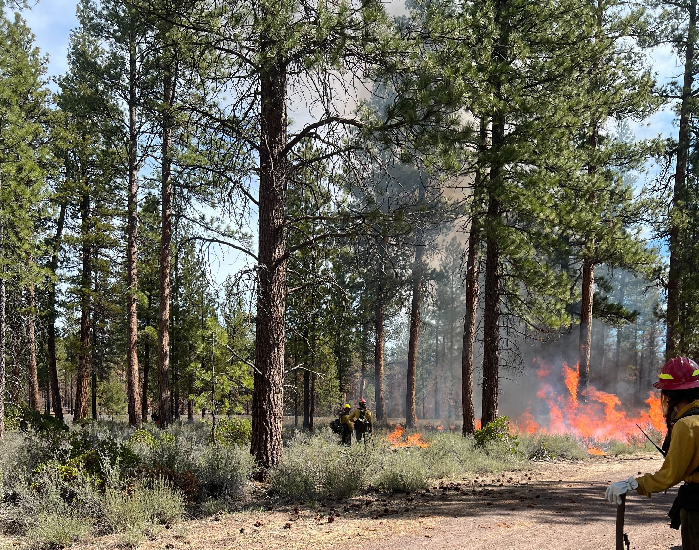

Bringing Good Fire To Places I Love
Protecting Communities!
Fire season after fire season underscores how many of our communities are risk of wildfire. However, for me the summer of 2021 was the first time it really started to “hit home.” The 2021 heat dome across the Pacific Northwest jump started an intense wildfire season. That summer, an epic heat dome caused 100+F days for nearly a week. I had just finished my MSc thesis and was visiting friends in the Southeast BC. The day I drove back to Vancouver, more than 600 fires started in British Columbia in the span of the day. That same weekend - the town of Lytton, BC burned in it’s entirety in an hour after the initial fire report.
The story of Lytton in June made it all the more scary in August when Beechie creek wildfire raced down the Cascade Crest of Oregon in the Willamette Valley. My parents home in Salem, normally hours from any wildfire, were on evacuation alert. In Detroit, Oregon the fire moved so fast and at such high intensity that they lost all of downtown and even a full-size fire engine. The fire engine is there to this day - a reminder of our new catastrophic wildfire reality. I bring up this story because describes why I was so passionate about my prescribed burn training in Bend, Oregon this May. I was so thankful for the opportunity to do work in Oregon on prescribed burning because I was protecting people I care about.

What is TREX?
TREX or Training Exchanges were developed in the early 2000s to address a critical need to get more prescribed burning done when the weather and fuel conditions are right. They bring people from all different locations that work in fire to the same spot to do managed fire when it is possible to do managed fire. Alongside getting more fire on the landscape, they also support knowledge exchanges between fire practitioners. In so doing we can learn the many ways fire can better our land management. In this post I am going to talk about the value of prescribed burning and forest fuel management, the management methods, and finally the value of cross-boundary relationships for achieving management goals.
Managing Fire with Fire - the Wildfire Paradox
Developing Wildfire Disaster Resilience through Mitigation
Prescribed Fire Definitions
Prescribed fire is a fire that purposely planned and managed for on a landscape. The purpose of a fire prescription can include:
Fuel reduction
Agriculture and timber management
Ecosystem health and restoration
It is important to recognize that our forest ecosystems evolved with fire. Further, fire is part of historic western North American land management. Indigenous have integrated fire as part of land stewardship for millenia. The US government started to realize the need and benefits of wildfire on the landscape in 2009, and supported large-scale implementation of prescription and research under the Collaborative Forest Landscape Restoration Program authorized by the 2009 Omnibus Public Lands Management Act. This grant provided $40,000,000 2009 through 2019 to fund thinning and prescription across the US. The benefits of this investment are just beginning to be realized.
Impact of Prescriptions
Prescription burning, mechanical thinning with prescription burning, and mechanical thinning all reduce severity of subsequent wildfire. In a 2024 meta-analysis of 40 studies across the US, they found the overall effect of prescription decreased severity by 62-72%. The most effective is a combination of thinning and prescription burning Davis et al., 2025.
The State of Oregon and individual counties capitalized on the fuel management funding of the late 2000s to support large-scale mechanical thinning operation and the development of cohesive burn plans. A particularly successful case-studies from the statewide forest fuel management investment is the Deschutes Collaborative Forest Project treatments in Sisters, Oregon. In this case, fuel management followed by prescribed burning helped wildland firefighters protect Sisters from the 2017 Fire - another fire that burned at incredibly high-intensity.
.jpg)
Perhaps more powerful than the science behind prescribed burning is talking to the wildland firefighters who have worked on burns near prescriptions. We visited multiple recent wildfires where fire managers described how they used the locations with fuel treatments (also called treated) to control the wildfire spread. When they talked about these treatments you could tell how knowing their was a treatment they could use in their attack brought them relief and confidence to limit the impact of catastrophic fire on communities they love. Check out the video below for more information:
Management Methods in Oregon
There are many approaches to integrate fuel management and prescribed burning into land management. Below I am going to highlight some of the specific plans that are used in Oregon
These different approaches are designed to limit the movement of fire through the landscape. These mitigation efforts are designed to protect assets including critical infrastructure for health, water, and power, densely populated areas, and many other identified land values. For a full list of these values see here. When designing fuel management plans at a landscape scale, a common approach in the US called the “PODS” framework which stands for “Potential Operational Delineation.” In a PODS framework you identify likely ignitions locations, and areas to either mitigate or respond to during a wildfire event. There are many different plans throughout Central Oregon, but a particularly great example is the West Bend Project - this restoration project is particularly cool because it operates very close to the urban environment!
PODS have already been used in Oregon for fire response - you can see this highlighted in this ArcGIS story map for the Dillon Creek Fire of 2023
Maintenance burning
Our 2025 TREX training worked on some of the treatments that have been developed across Central Oregon. The unique part of TREX is that you learn both the why and the how of prescribed burning. It was an awesome experience to read through the “burn plans” to understand how a burn manager would approach meeting “burn objectives” such as reducing the number of shrubs or the amount of dry litter on the ground.
Before every burn you do a “test fire” which checks to make sure that the fuel, moisture, and weather conditions will allow you to burn to meet objectives. In some cases, our test fire meant that we stopped the fire for the day and transitioned to “mop up.” During mop up we put in containment lines around the fire, put out some of the larger flames, monitored the fire to make sure it did not move.

If the test fire was successful we proceeded to burn the rest of the block. During the burn, you adjust the spacing of people and fuel addition so that you can control the fire intensity. Burning often took the entire morning, but afterwards everyone would be put on “holding” where you active held the fire and started to “mop up” again. It was during holding that I got the opportunity to chat and learn from the diverse experiences of my colleagues. Along the way, I got to learn new tools like how to use, clean, and maintain a chainsaw! (This last item is particularly useful because my new house has a woodshed and a woodstove).
Burning and Learning - The Power of Collaboration!
My biggest takeaway from my TREX experience was the sheer amount of collaboration to complete prescription increase the safety around communities of Central Oregon. Planning a prescription can take decades, and even once a plan is developed it can take years for the right people and the right conditions to accomplish a burn. Central Oregon has a lot of resources to help private landowners learn more about mitigating catastrophic fire risk. If you are private landowner, city official I highly recommend taking a look at some of the resources I’ve linked below.
- Becoming a prescribed burn manager
- Central Oregon Fire Information Website
- Deschutes Collaborative Forest Project
Personally, I am excited to stay involved in mitigating central Oregon’s fire risk - both because I love this landscape and because there are people I love who live on this landscape. More than anything, I am excited to keep #BurningAndLearning in dry forests across western North America !